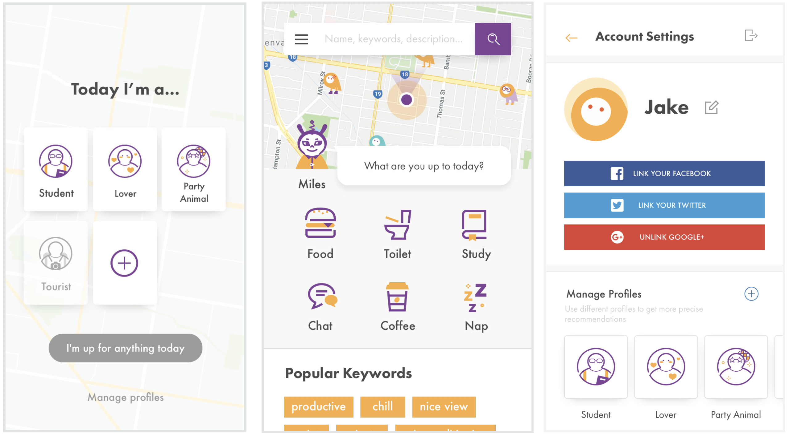
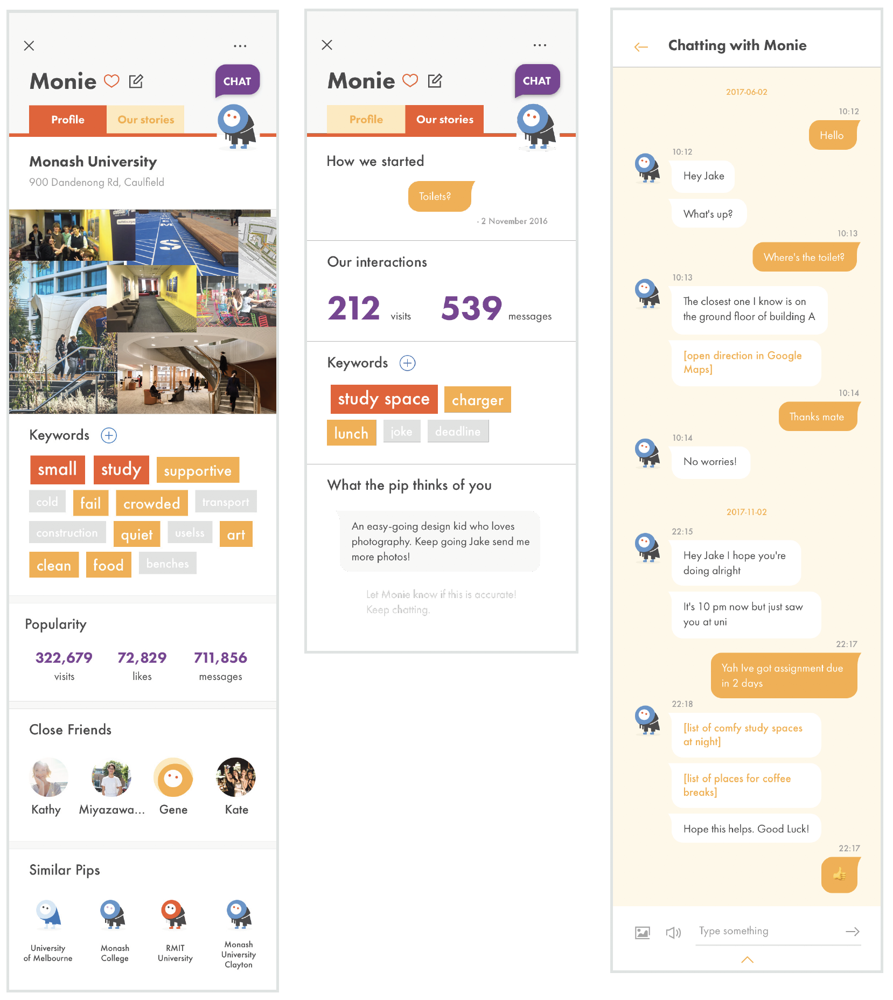

Pip aims to encourage users to engage more emotionally with the physical space, and the results generated from the interactions can hence help the users find places more accurately by not only the attributes and properties of places, but also the sense of place.
In order to build the reliable data source, conceptually, the app will first gather information about places from different sources of the internet (Google Maps, Tripadvisor etc.) to generate the basic details about a place. And then the users are allowed to interact with the places to further enrich the information. It should also utilise artificial intelligence to be able to better understand users’ instructions, so that it can respond accurately.
Feature 1 — personalisation
As mentioned in the findings, the sense of place is affected by the person interacts with the place. Hence, the app tries to get a comprehensive image of the user, and recommend different options in different situations.
Feature 2 — chatbots & personification of places
pip
A pip is a character with human personalities, which represents a place in physical space. The sense of place could be reflected from its personality.
You can chat with these little characters and easily access relevant information of the place, or even maintain a friendship with it so that it knows you more and hence give you more personalised information.
You are also encouraged to tell it your interaction and memories of the place. The pip will remember.
The more information about a place is know, the more distinct characteristics a pip will gain. Its image might also change.
create new pips
In the case some places might not be marked as a pip, either bacause it just appears or it’s too small too be marked as a place by other platforms (such as a bench on the street), you can create a new pip. By providing informtation of the place, it’f like teaching a new-born baby about its identity, which is potentially a good way to encourage users to contribute information actively.
miles
Miles is your helper who is always there and you can chat with. If you find something is hard to search for through the search feature, or you just wan to chitchat, talk to him and he’d recommend you some good place to go to.

Feature 3 — Advanced Search
The app provide a lot of filters for users to play around with in order to get more personalised results.